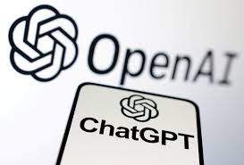

Can Musk damage OpenAI even though his bid has failed?

Febuary 15th 2025
OpenAI's board of directors has officially rejected Elon Musk's nearly $100bn offer for the maker of what is the world's best-known artificial intelligence (AI) tool, ChatGPT.
But the unsolicited bid might not be a failure - at least as far as Musk is concerned, experts say.
That's because the offer could still complicate CEO Sam Altman's plans to transform OpenAI from a non-profit controlled entity to a for-profit company.
Musk is "basically trying to stymie OpenAI's growth trajectory," said University of Cambridge associate teaching professor Johnnie Penn in an interview with the BBC.
Profit & non-profit
Last week, Musk and a consortium of investors including Hollywood superagent Ari Emanuel tabled a $97.4bn (£78.4bn) offer for all of OpenAI's assets.
It was a huge sum - but less than the $157bn the firm was valued at in a funding round just four months ago, and much lower than the $300bn that some think it is worth now.
Complicating all of this is OpenAI's unusual structure which involves a partnership between non-profit and for-profit arms.
Mr Altman is understood to want to change that, stripping it of its non-profit board.
That involves costs which Mr Musk is seemingly trying to inflate.
"What Musk is trying to do here is raise the perceived value of the non-profit arm of OpenAI, so that OpenAI has to pay more to get out of the obligations it has to its own non-profit," said Dr Penn.
The value of its non-profit assets isn't clear. With his bid, Musk was floating a price, according to Cornell University senior lecturer Lutz Finger, who is also the founder and CEO of AI startup R2Decide.
"By Musk putting a price tag on the non-profit part, he makes the split way more expensive for Altman to do," Mr Finger told the BBC. "It's very simple."